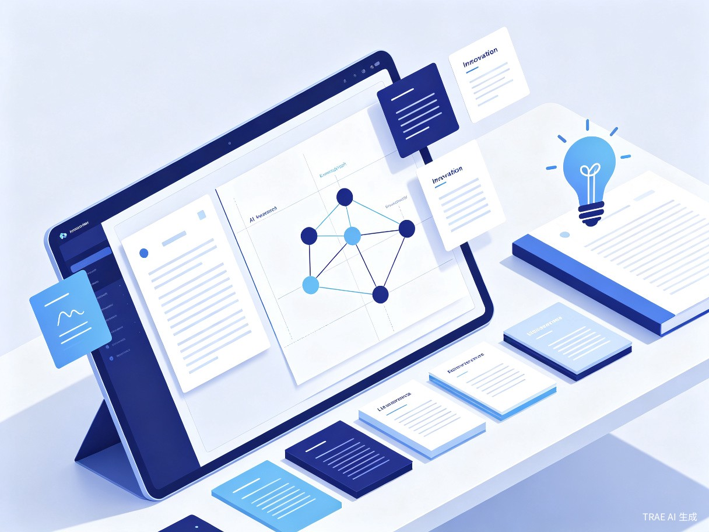

从模糊想法到完整论文方案，每一步都有 AI 辅助
自动识别研究对象、关键词、应用场景和方法方向，帮你把模糊想法变得清晰结构化。
自动扩展检索词，推荐顶刊文献、高被引文献、综述文献和近年代表性研究。
自动提取研究问题、方法、数据、结论、不足与未来方向，构建结构化知识库。
将文献—问题—方法—数据—结论—不足—创新点组织成可视化图谱，看清研究脉络。
生成多个候选论文选题，每个方案含题目、背景、创新点、技术路线和可行性分析。
适用于课程论文、毕业论文、开题报告、课题申报、文献综述和科研训练等多种场景。
ResearchSpark 不只是 AI 写作工具，而是从选题到方案的完整闭环
| 功能维度 | 通用 AI 聊天 | 文献管理工具 | AI 写作助手 | ResearchSpark |
|---|---|---|---|---|
| 智能关键词扩展 | ✕ | ✕ | ✕ | ✓ |
| 高水平文献检索 | ✕ | ✓ | ✕ | ✓ |
| 文献知识自动提取 | ✕ | ✕ | ✕ | ✓ |
| 研究知识图谱 | ✕ | ✕ | ✕ | ✓ |
| 研究空白发现 | 部分 | ✕ | ✕ | ✓ |
| 论文方案生成 | 部分 | ✕ | ✓ | ✓ |
| 文献依据追溯 | ✕ | ✕ | ✕ | ✓ |
| 选题全流程闭环 | ✕ | ✕ | ✕ | ✓ |
只需要一个模糊的想法，剩下的交给 ResearchSpark
为你检索到 28 篇高度相关文献，按相关度和引用量排序展示
自动提取每篇文献的研究问题、方法、数据、结论、不足和未来方向
| 文献 | 研究问题 | 方法 | 数据 | 主要结论 | 研究不足 | 未来方向 |
|---|---|---|---|---|---|---|
| Zhang et al. (2024) | LLM 在临床决策支持中的综合评估 | 系统综述 | 多源文献 | LLM 在常见病诊断中表现良好，罕见病表现不足 | 未提出具体改进方案 | 需要专门针对罕见病的 RAG 策略 |
| Li et al. (2024) | 医疗 QA 中 RAG 的评测基准 | 基准测试 | 12 个医学子领域 | 长尾疾病检索召回率不足 | 仅评测未改进 | 改进长尾疾病的知识检索 |
| Chen et al. (2023) | 罕见病诊断的 RAG 优化 | 知识图谱+RAG | 5 个罕见病数据集 | KG 增强检索显著提升诊断准确率 | 知识图谱覆盖有限 | 动态更新和自动扩展知识图谱 |
| Wang et al. (2024) | AI 辅助罕见病诊断综述 | 叙述性综述 | 文献综述 | 数据稀缺、知识表示不足、评估标准缺失 | 缺乏定量分析 | 建立统一评测标准和数据集 |
| Kim et al. (2024) | 医疗 LLM 的自适应检索 | 动态知识选择 | MedQA / MMLU | 自适应检索提升 12% 性能 | 未测试罕见病 | 扩展到罕见病和长尾疾病 |
| Park et al. (2023) | KG 增强 LLM 鉴别诊断 | KG+LLM 融合 | 临床病例数据 | 提高诊断覆盖率和准确性 | KG 构建维护成本高 | 自动化 KG 构建与更新 |
文献、问题、方法、数据和创新点的关系一目了然
graph TB
subgraph 研究方向
A[🏥 医疗问答中的 LLM 应用]
end
subgraph 核心方法
B[🔗 RAG 检索增强生成]
C[🧠 知识图谱增强]
D[🎯 自适应检索策略]
E[📊 少样本/零样本学习]
end
subgraph 数据与评测
F[📋 通用医疗 QA 基准]
G[🏥 罕见病专门数据集]
H[📖 医学知识图谱]
end
subgraph 研究不足
I[⚠️ 罕见病检索召回率低]
J[⚠️ 知识图谱覆盖不足]
K[⚠️ 缺乏长尾疾病评测]
L[⚠️ KG 构建维护成本高]
end
subgraph 创新机会
M[💡 罕见病专属 RAG 架构]
N[💡 动态知识图谱构建]
O[💡 多模态罕见病诊断]
P[💡 跨语言医疗知识迁移]
end
A --> B & C & D & E
B & C & D & E --> F & G & H
F & G & H --> I & J & K & L
I & J & K & L --> M & N & O & P
style A fill:#4F46E5,color:#fff,stroke:#3730A3
style M fill:#0EA5E9,color:#fff,stroke:#0284C7
style N fill:#0EA5E9,color:#fff,stroke:#0284C7
style O fill:#0EA5E9,color:#fff,stroke:#0284C7
style P fill:#0EA5E9,color:#fff,stroke:#0284C7
style I fill:#FEF3C7,color:#B45309,stroke:#D97706
style J fill:#FEF3C7,color:#B45309,stroke:#D97706
style K fill:#FEF3C7,color:#B45309,stroke:#D97706
style L fill:#FEF3C7,color:#B45309,stroke:#D97706
基于文献知识库和研究图谱，为你生成 4 个可落地的论文选题方案

Turn a rough idea into a research-ready paper plan.
把一个模糊想法，转化为可落地的论文创新方案。